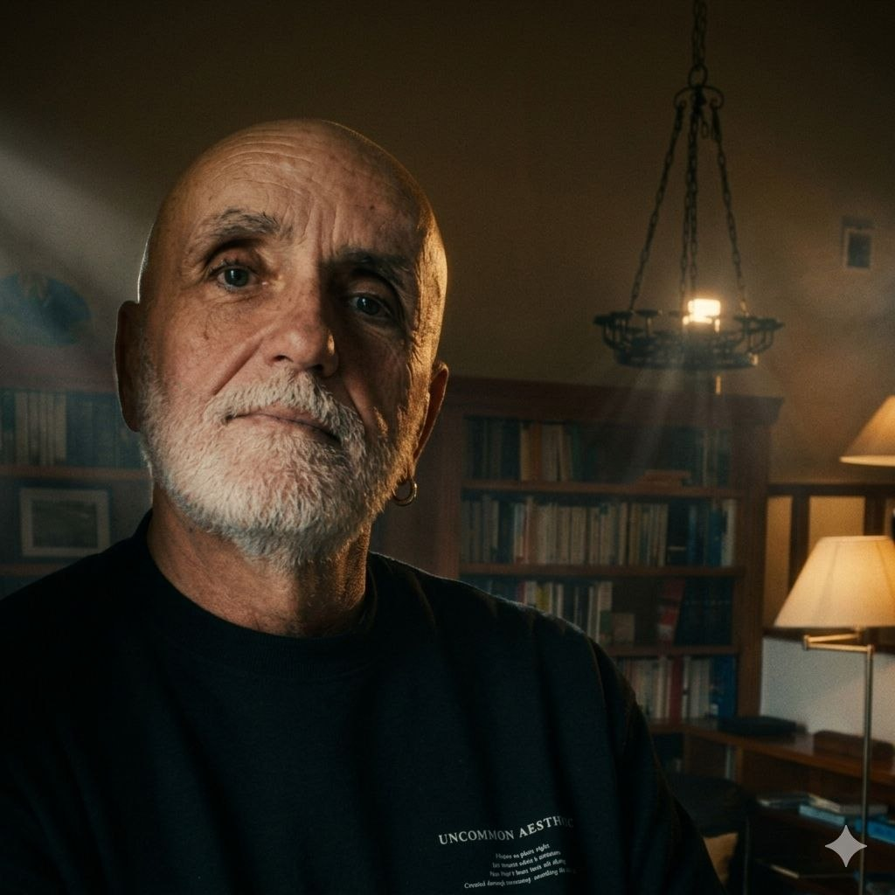

For people in psychotherapy looking for support between sessions.
For the days when anxiety creeps back and your next appointment feels miles away. A short audio track every morning and evening, a seamless mood journal, and a 14-day progress chart. No apps to download — LimenBridge integrates right into your existing calendar upon registration.
No card required. No commitments. Unsubscribe anytime.
The Gap
You see your psychotherapist once a week. The session ends, you close the door, and you are back to navigating life on your own for the next six days.
There is no structure between appointments. No daily anchors. When anxiety returns, you just have to cope the best way you know how. Sometimes it hits as sheer exhaustion the day after a heavy session. Other times, it's that familiar midweek dread, arriving just as the tools you learned begin to fade. It can feel like walking this path entirely alone.
This doesn't mean your therapy isn't working. In fact, this is the reality for most people doing the hard work of personal change. You simply lose your footing exactly when you need support the most.
How It Works
Your body changes throughout the day, following a strict biological rhythm. LimenBridge is designed around this science. Our morning and evening tracks serve entirely different purposes because your body is in two distinct states at the beginning and the end of the day.
06:00 — 09:00
About 30 minutes after you wake up, your cortisol levels naturally peak as your body transitions from sleep to alertness. Often, this shift feels like morning anxiety or stress. The morning track works with this exact window: it gently stabilizes your nervous system without overwhelming it, helping you start the day grounded.
20:00 — 23:00
By nightfall, your body is wired to shift into recovery mode. However, accumulated stress, blue light, and racing thoughts block this natural transition. The evening track is deeper and more rhythmic. It guides your body to release tension so you can drift off without an anxious mind and wake up feeling a bit lighter.
The Daily Ritual
When you are overwhelmed or exhausted, even choosing what music to listen to feels like an extra chore. LimenBridge removes that friction entirely: the right sound finds you exactly when you need it.
Your start
Your calendar sends you a notification at your chosen time. You open the track — five minutes, or ten if you have the time. Right after, there is one simple question about how you feel. This isn't a long journal entry or a deep self-analysis; it's a quick check-in. It takes two seconds.
Your time
The rest of the day belongs to you, your work, your loved ones, and your life.
Your close
Your calendar prompts your evening ritual. A short track, followed by a quick question: How did today go? Just two minutes to yourself — nothing more.
Your story
The system saves your check-ins, but never to judge or score you. After two weeks, you will see a clear, intuitive chart of your emotional trends. This is your personal story of self-care — mapped out in clear facts, free from guesswork.
Prefer SMS reminders? You can add that at registration too.
Behind the Project

Mark Vdovskikh
LimenBridge was created by a practicing specialist with decades of clinical experience helping people whose stress lives physically in their bodies.
In clinical practice, the same story unfolds daily: a client leaves a profound session and suddenly finds themselves alone with everything that just surfaced. There is a whole week until the next appointment. No structure, no safety net.
LimenBridge was built to bridge this specific gap. It is not a replacement for your psychotherapist; it is a gentle, steady anchor between your sessions.
What People Say
Pricing
Monthly
per month
Full access to all features. Cancel anytime with a single click.
Morning and evening tracks
Daily mood journal
14-day progress insights
Annual
per year · get two months free
For those committed to long-term stability. Save 27% compared to monthly.
Morning and evening tracks
Daily mood journal
14-day progress insights
Most Popular
Both plans include full access to all features from day one.
LimenBridge is built for the other 167 hours. It is your daily point of support on the days when your next session still feels far away.
Try it free for three days. No credit card required. No commitments.